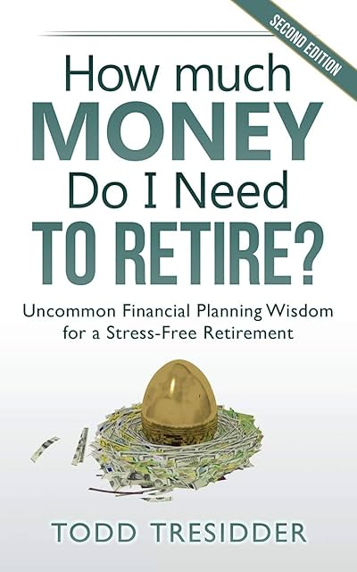

How much money do I need to retire? by Tresidder
Tuesday September 10, 2024
Tresidder is in some ways likeable and reasonable, and in other ways sort of a skinny-FIRE Robert Kiyosaki who is "retired" but still shills constantly in the direction of his $1,750 online course like he read The 4-hour work week.
Most of the book is criticism. On page one we get "Traditional retirement planning has failed." It all feels mostly like a sales tactic: His approach is the one that works!
He spends a lot of time criticizing Monte Carlo methods. His explanation of the approach in general is so bad it must be deliberately so. Unsavory rhetoric.
There is a reasonable argument buried in his hate for MC methods: He thinks they don't go far enough in considering more extreme possible futures, while their confidence intervals make them seem all-knowing when they're not. They generally won't model Social Security disappearing altogether, for example, but they'll still allocate 100% of probability, as if there's a 0% chance of these sorts of "extreme" futures.
So his solution is a sort of manual Monte Carlo, putting lots of weird things into (his, of course) calculators.
He also correctly, I think, focuses on the human reality of living just one life, not a probability distribution of lives, so what we really need is to eliminate extreme downside risk as much as possible.
How much of the retirement planning literature is just confusion about inflation? Possibly a lot, I think.
It turns out his solution is mostly from the skinny-FIRE school of thought: Spend less! Then there's the Robert Kiyosaki part: Cash flow! Real estate!
I object to telling people to become landlords like it's easy, good, and risk-free. The general idea of not dipping into your capital seems fine though. But now are we just back to the original methods he despises, only worse off because we're imagining the capital is safe (and even grows with inflation)? I think yes.
There are some good vibes about enjoying your life, and maybe his recommendation to consider a longevity annuity is reasonable, but for the most part this book is more an advertisement than a resource.

"Every act of creation is first an act of destruction." (page 21)
I think this is supposed to be Picasso? But his usage is unattributed? Sort of weird, given how much he likes to include well-known quotes otherwise.
(Regarding long-term increases in life expectancy) "There is some debate about this statistic with some people claiming the gains came from reductions in infant mortality." (page 46)
This is not a debate! See, for example, Life expectancy is historically misleading .
investment returns over longer time periods of seven years or more are not random. (page 69)
This is part of his idea that he can time the market based on P/E. Valuations aren't nothing, but his takes are a bit much.
"let’s apply conservative estimates by cutting my pension and social security in half so that my combined income sources provide just $15,000 per year instead of $50,000." (page 129)
How does this make sense?
"Different tax rates would only be marginally meaningful if your income fell dramatically after retirement. Are you planning on poverty or financial security?)" (page 142)
It's sort of amazing that he would say this. Your effective tax rate could easily be cut in half at retirement if you're earning a bunch and saving most of it before retirement.
"“Today’s scientists have substituted mathematics for experiments, and they wander off through equation after equation, and eventually build a structure which has no relation to reality.”-Nikola Tesla, inventor" (page 149)
I do like this quote.
"Complicated math is usually more symptomatic of covering up ignorance than expressing wisdom." (page 192)
Also not terrible.
"Retirement planning done right is really about life planning, not calculating magic numbers." (page 151)
"Every dollar bill you spend in your twenties is like spending a hundred dollar bill in retirement." (page 179)
What? Really?
This is assuming 10% annual return over 45 years? And it's nominal? (With inflation, more like $20 purchasing power?)
I guess he's just trying to be dramatic, but I would rather he not be dramatic with numbers.
"The main thing to note is how every other model relies on history to be your guide. This cash flow-based model is the only approach that requires no historical analysis because it is entirely based on numbers fully known in the present. This is important because the past is not the future." (page 199)
Tresidder paints "cash flow" methods as immune from risk, and generally somehow automatically protected from inflation. This isn't the case!
"Lifestyle planning isn’t really a separate retirement model per se." (page 208)
(The book is structured and presented as if it is.)